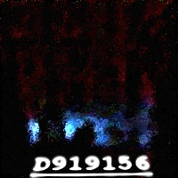
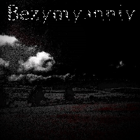

Back to Homepage
(All links are removed as the music is lost)
| Midi
Pack II Date of Release: April 2018 Amount of Tracks: 62 Length: N/A Size: 50 kb Download |
||||
 |
Mutation
Constipation Date of Release: February 2018 Amount of Tracks: 7 Length: 22 minutes Size: 18 mb Download |
|
Midi
Pack I Date of Release: September 2017 Amount of Tracks: 57 Length: N/A Size: 50 kb Download |
|
|  |
D919156 Date of Release: July 2017 Amount of Tracks: 18 Length: 28 minutes Size: 23.7 mb Download |
 | Bezymyanniy Date of Release: June 2017 Amount of Tracks: 3 Length: 1 hour 17 minutes Size: 8.4 mb Download |
|
|
|
Insane
Torture Machine Date of Release: June 2017 Amount of Tracks: 7 Length: 43 minutes Size: 42.3 mb Download |
Cockroach
Dinner Date of Release: March 2017 Amount of Tracks: 8 Length: 40 minutes Size: 50.8 mb Not Available! |